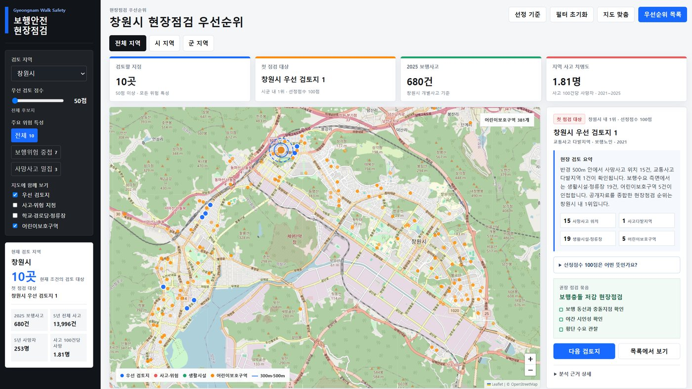
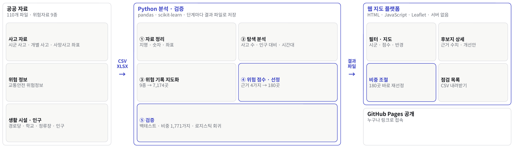
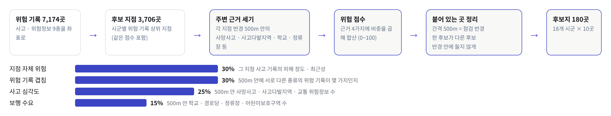
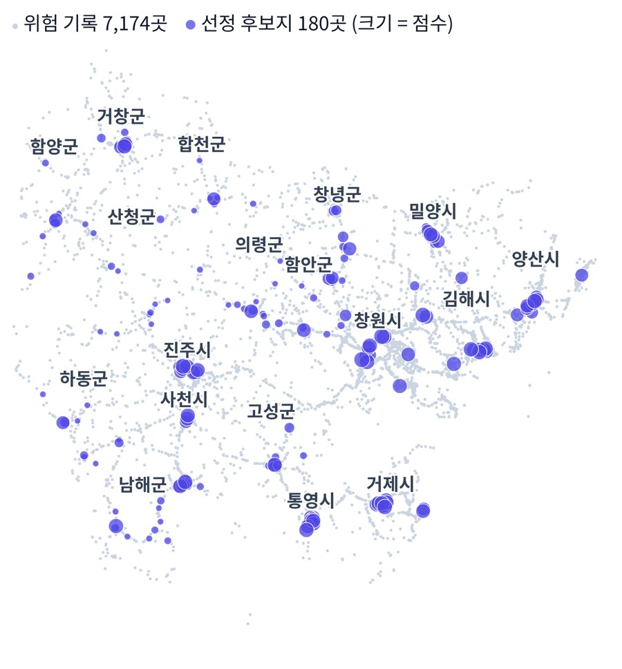

01
개요

문제
- 경남 18개 시군을 모두 점검할 인력 · 예산이 없음
- 민원 · 경험 위주 선정은 사각지대가 생기고, 사고 총량은 인구 규모를 그대로 반영해 우선순위 기준이 못 됨
해결
- 공공 위험자료 9종을 좌표 7,174개로 표준화
- 지점 반경 500m 안의 근거 4가지를 비중대로 더한 위험 점수로 시군별 10곳, 후보지 180곳 선정
- 담당자가 바로 쓰는 지도 플랫폼으로 제공
- 데이터
- 사고 · 다발지역 · 사망사고 · 위험정보 · 생활시설 · 보호구역 · 인구
- 출처
- TAAS · TCIC · 공공데이터포털 등
02
원천 파일 → 분석 스크립트 → 지도

재현 가능같은 입력이면 같은 결과
원천 파일 → 스크립트 → 결과 파일
공통 범위18개 시군 공통 자료만
일부 지역에만 있는 자료는 제외
웹 계산 일치분석 코드와 180곳 일치
화면에서 다시 계산한 후보지가 분석 코드 결과와 모두 같음
내 작업
03
데이터 정제와 탐색 분석
공통 정제 4단계
① 시군명마산 · 진해 등 옛 지명을 창원시로 통합
② 숫자쉼표 · 단위 · 빈 값 정리
③ 좌표경남 범위(위도 34.45–35.95 · 경도 127.55–129.3) 밖은 제외
④ 공통 범위18개 시군 중 일부에만 있는 자료 제외
탐색 분석에서 찾은 것
- 총량의 한계: 사고 총량 순위가 곧 인구 순위 → 위험 비교 기준이 될 수 없음
- 순위 역전: 통영 · 사천은 총량 6–7위지만 인구보정 사고율 1–2위
- 결정: 총량 대신 지점 단위 근거를 겹쳐 보는 점수로 설계, 행정구역이 아닌 좌표로 집계해 지점까지 특정
04
후보지 선정 점수

지점 반경 500m점수 근거 4가지는 모두 반경 500m 안에서 셈. 300m는 화면에 보여 주는 참고 개수에만 씀
중첩에 가중한 종류 근거만 많은 곳보다 서로 다른 근거가 겹치는 곳을 우선
시군별 할당큰 도시에 몰리지 않게 시군마다 10곳
후보 간 간격 500m간격 500m = 점검 반경. 한 후보가 다른 후보 반경 안에 들지 않게 띄움. 검증 기간에서 간격 120 · 250 · 500m(13.7 / 14.8 / 17.0%)를 비교해 확정
05
현장점검 플랫폼

필터시군 · 점수 하한 · 위험 유형 · 시/군 구분
지도후보지 · 사고 · 생활시설 · 보호구역 레이어, 지점 반경 500m
상세반경 내 사망사고 · 다발지역 · 생활시설 · 보호구역 건수
개선안위험 유형별 권장 점검 묶음과 우선순위
근거 공개점수 계산식과 반경 기준을 화면에서 공개, 왜 뽑혔는지 수치로
06
과거 자료로 이후 사고 맞히기2026.10 고도화
재는 방법
과거 자료만2021년까지 자료만 사용, 그 뒤는 가림
같은 방법으로 선정180곳 · 반경 500m = 점검 범위
이후 실제 사고2022 – 24년 사망사고 468건 + 새로 지정된 사고다발지역 89곳 = 557건
포착률이후 사고가 미리 고른 곳 반경 500m 안에서 난 비율
후보지 반경을 합치면 경남 면적의 1.2%이고, 그 안에서 이후 사고 4건 중 1건이 났습니다.
결과 · 이후 실제 사고 557건
| 고르는 방식 (각 180곳 · 반경 500m) | 포착률 |
|---|---|
| 위험 점수 · 내가 정한 비중 | 25.1% (140건) |
| 위험 점수 · 머신러닝이 찾은 비중 | 27.3% |
| 과거 사망사고가 많은 곳만 | 22.3% |
| 무작위로 고른 위험 기록 | 10.5% |
| 무작위로 고른 생활시설 | 5.9% |
140건 = 사망사고 76 + 새 사고다발지역 64. 과거 사망사고 많은 곳만 고른 경우보다 2.8%p 높음. 무작위 생활시설의 약 4배, 무작위 위험 기록의 약 2.4배. 2019년 기준으로 반복하면 위험 점수 20.1% vs 과거 사망사고 많은 곳 20.2%로 비슷합니다.
로지스틱 회귀로 비중 확인
- 근거 4가지 점수로 그 지점 500m 안에서 사고가 날지 맞히는 모델을 학습해, 데이터가 고른 비중과 비교
- 머신러닝 비중을 쓰면 포착률 27.3%, AUC 0.829 → 0.844
- 기본값은 설명하기 쉬운 룰 기반 비중으로 두고, 학습한 비중은 플랫폼에서 고를 수 있게 제공